Esta página contiene enlaces a los números publicados de la revista Programar en 2018 - 2017 - 2016 - 2015 - 2014 - 2013 - 2012 - 2011 - 2010 - 2009 - 2008 - 2007 - 2006.
Página web: Programar
Número 60 - 2018 septiembre
Descarga (PDF 4.4 MB portugués)
Número 59 - 2018 febrero
Descarga (PDF 5.1 MB portugués)
Número 58 - 2017 noviembre
Descarga (PDF 6.4 MB portugués)
Número 57 - 2017 julio
Descarga (PDF 4.1 MB portugués)
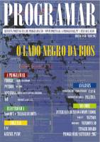
Número 56 - 2017 mayo
Descarga (PDF 21.1 MB portugués)
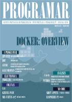
Número 55 - 2017 marzo
Descarga (PDF 22.2 MB portugués)
Número 54 - 2017 enero
Descarga (PDF 22.7 MB portugués)
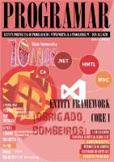
Número 53 - 2016 agosto
Descarga (PDF 4.2 MB portugués)
Número 52 - 2016 marzo
Descarga (PDF 15.5 MB portugués)
Número 51 - 2015 diciembre
Descarga (PDF 4.6 MB portugués)
Número 50 - 2015 septiembre
Descarga (PDF 29.3 MB portugués)
Número 49 - 2015 junio
Descarga (PDF 13.4 MB portugués)
Número 48 - 2015 marzo
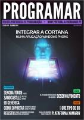
Número 47 - 2014 diciembre
Número 46 - 2014 septiembre
Número 45 - 2014 mayo
Descarga (PDF 9.6 MB portugués)
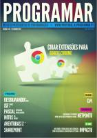
Número 44 - 2014 febrero
Descarga (PDF 7.7 MB portugués)
Número 43 - 2013 diciembre
Descarga (PDF 3.7 MB portugués)
Número 42 - 2013 agosto
Descarga (PDF 3.4 MB portugués)
Número 41 - 2013 junio
Descarga (PDF 9.0 MB portugués)
Número 40 - 2013 abril
Descarga (PDF 8.8 MB portugués)
Número 39 - 2013 febrero
Descarga (PDF 7.6 MB portugués)
Número 38 - 2012 diciembre
Descarga (PDF 6.2 MB portugués)
Número 37 - 2012 octubre
Número 36 - 2012 agosto
Descarga (PDF 8.9 MB portugués)
Número 35 - 2012 junio
Número 34 - 2012 abril
Descarga (PDF 11.1 MB portugués)
Número 33 - 2012 febrero
Descarga (PDF 7.8 MB portugués)
Número 32 - 2011 diciembre
Descarga (PDF 7.5 MB portugués)
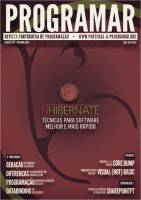
Número 31 - 2011 octubre
Descarga (PDF 3.5 MB portugués)
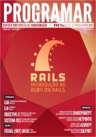
Número 30 - 2011 agosto
Descarga (PDF 9.9 MB portugués)
Número 29 - 2011 junio
Descarga (PDF 11.7 MB portugués)
Número 28 - 2011 abril
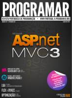
Número 27 - 2011 febrero
Descarga (PDF 9.3 MB portugués)
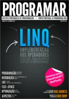
Número 26 - 2010 diciembre
Descarga (PDF 10.1 MB portugués)
Número 25 - 2010 octubre
Descarga (PDF 10.4 MB portugués)
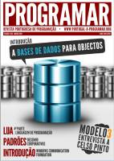
Número 24 - 2010 junio
Número 23 - 2010 enero
Número 22 - 2009 noviembre
Número 21 - 2009 septiembre
Número 20 - 2009 junio
Descarga (PDF 7.0 MB portugués)
Número 19 - 2009 abril
Descarga (PDF 5.0 MB portugués)
Número 18 - 2009 febrero
Descarga (PDF 12.3 MB portugués)
Número 17 - 2008 diciembre
Descarga (PDF 12.9 MB portugués)
Número 16 - 2008 octubre
Descarga (PDF 13.0 MB portugués)
Número 15 - 2008 agosto
Descarga (PDF 11.8 MB portugués)
Número 14 - 2008 mayo
Número 13 - 2008 marzo
Descarga (PDF 10.5 MB portugués)
Número 12 - 2008 enero
Descarga (PDF 5.7 MB portugués)
Número 11 - 2007 noviembre
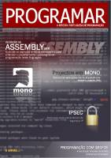
Número 10 - 2007 septiembre
Número 9 - 2007 julio
Número 8 - 2007 mayo
Descarga (PDF 6.6 MB portugués)
Número 7 - 2007 marzo
Número 6 - 2007 enero
Número 5 - 2006 noviembre
Descarga (PDF 3.3 MB portugués)
Número 4 - 2006 septiembre
Descarga (PDF 2.6 MB portugués)
Número 3 - 2006 julio
Descarga (PDF 1.9 MB portugués)
Número 2 - 2006 mayo
Descarga (PDF 1.4 MB portugués)
Número 1 - 2006 marzo
Descarga (PDF 2.4 MB portugués)